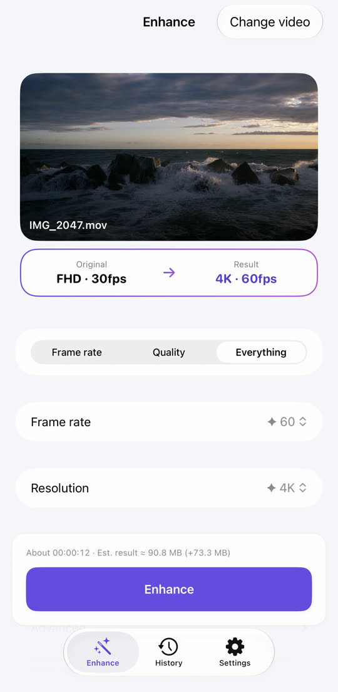
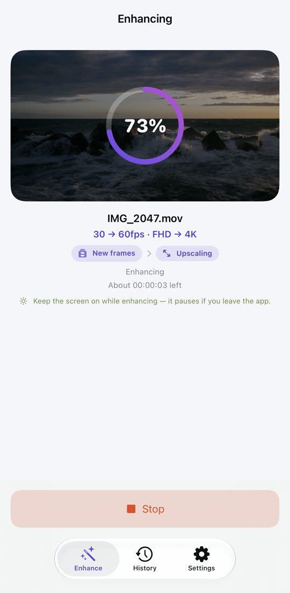
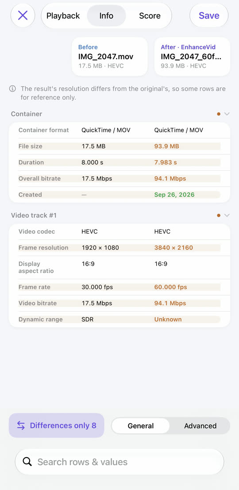
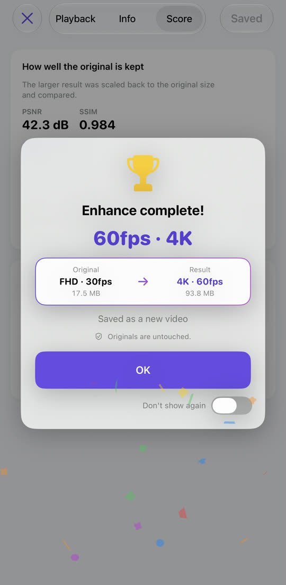

Choppy video, made smooth.
Soft video, made sharp.
30fps to 60fps, Full HD to 4K. EnhanceVid computes new frames between the ones you shot and raises the resolution for crisper detail. Everything runs on your iPhone, and the result is saved as a new video next to your untouched original.
Download on the App StoreFree · iOS 26 or later · iPhone · iPad · Apple silicon Mac

Less blur, more detail.
Resolution is raised with Apple MetalFX upscaling. Drag the line to compare.

 OriginalEnhanced
OriginalEnhanced
Sample image — a low-resolution original enlarged, next to the enhanced version.
Choppy motion, made fluid.
New frames are computed between the original ones. Scene cuts are never blended, so there is no ghosting.
Motion is exaggerated here so the difference is easy to see.
Pick, start, compare, save.



Everything you need, built in.
Clean up grainy low-light video. Available on supported devices.
4K 60fps to 30fps, 4K to Full HD — going down is an option too.
Side-by-side playback, a spec table and quality scores (PSNR, SSIM, optional VMAF).
HDR and Dolby Vision video shot on iPhone stays HDR in the result.
Videos from Photos and the Files app, including MKV, WebM and AVI.
The result is saved as a new video. The original is never changed or deleted.
Nothing is uploaded and no account is needed. Free, supported by ads — Privacy